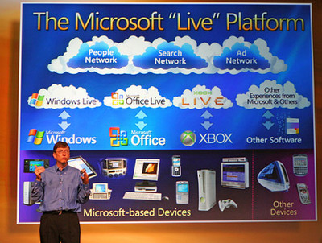

At 17, Gates formed a venture with Allen called Traf-O-Data to make traffic counters based on the Intel 8008 processor.
In 1972, he served as a congressional page in the House of Representatives. He was a National Merit Scholar when he graduated
from Lakeside School in 1973. He scored 1590 out of 1600 on the Scholastic Aptitude Tests (SAT) and enrolled at Harvard College
in the autumn of 1973. He chose a pre-law major but took mathematics and graduate level computer science courses. While at Harvard,
he met fellow student Steve Ballmer. Gates left Harvard after two years while Ballmer stayed and graduated magna cum laude.
Years later, Ballmer succeeded Gates as Microsoft's CEO and maintained that position from 2000 until his resignation in 2014.
Copyright © 2563. By Teerapat Boonchuaylaew 62070096.